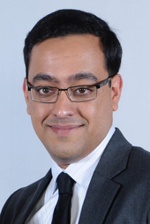

Founder and Independent Researcher
Formerly: Associate Professor, School of EECS, Ohio University
Contact Info:
h.chenji at gmail dot com
Bio
I was an Associate Professor in the School of EECS at Ohio University, where I led the Wireless Systems Research Group (WSRG). My areas of research include quantum information, quantum networks, AI for material science, wireless optical and cellular networks, computer architecture and space cybersecurity.
Previously, I was a postdoc in the Wireless Networks Lab, headed by Prof. Zygmunt J. Haas, in the Department of Computer Science at the University of Texas at Dallas. I received my PhD and MS in Computer Engineering from Texas A&M University, advised by Prof. Radu Stoleru. Back in 2007, I happened to obtain a degree in Electrical and Electronics Engineering, from NITK Surathkal, India. I am originally from Bangalore, India.
Sponsored Research
We are very grateful to these agencies for sponsoring our group's research:

REU Supplement: $16,000 (2017)

Teaching
CS 4900/5900 (Quantum Information Processing Systems)
EE 6743 (Information Theory)
EE 3753 (Introduction to Computer Networking)
EE 3513 (Digital Signal Processing)
CS 4900/5900 (Hands-on Cybersecurity)
EE 3613 (Computer Organization)
CS 6900 (Software defined radio and software defined networks)
EE 3753 (Introduction to Computer Networking)
CS/ITS 4750/5750 (Internet Engineering)
EE 4900/5900 (Wireless Networking & the Internet of Things)
EE 3954 (Microprocessors and Microcontrollers)
CS/ITS 4750/5750 (Internet Engineering)
News
Event (2024) Moved to Bangalore, India!
Award (2024) Received 3 research and education grants.
Publication (2024) “d-GUARD: Thwarting Denial-of-Service Attacks via Hardware Monitoring of Information Flow using Language Semantics in Embedded Systems,” at ASP-DAC.
Publication (2024) “DAGGER: Exploiting Language Semantics for Program Security in Embedded Systems” at ISQED.
Publication (2023) “Reflections of Cybersecurity Workshop for K-12 Teachers” at SIGCSE.
Award (2023) Received the 2023 Russ Outstanding Research Paper Award.
Event (2022) M. Atakora graduates with a Ph.D., A. Saadou with a M.S. and M. Morales with a B.S. (Hons)!
Publication (2022) “A Link Quality Indicator for Topology Control in MEMS-based FSO Networks” at ICC 2022.
Publication (2022) “Reflections of Cybersecurity Workshop for K-12 Teachers and High School Students” at SIGCSE.
Publication (2022) “Agile neighbor discovery in MEMS-based free space optical networks: a computer vision approach” accepted in Journal of Optical Communications and Networking.
Publication (2021) “Fine-Grain Reconfigurable Logic Circuits for Adaptive and Secure Computing via Work-Function Engineered Schottky Barrier FinFETs,” accepted in IEEE Journal on Exploratory Solid-State Computational Devices and Circuits.
Event (2021) Promoted to Associate Professor with full tenure.
Publication (2020) Our paper “Reconfigurable Gates with Sub-10nm Ambipolar SB-FinFETs for Logic Locking & Obfuscation” accepted at MWSCAS 2020.
Publication (2020) Our article “EAR: Energy-Aware Risk-averse Routing for Disaster Response Networks” accepted at Ad Hoc Networks (Elsevier).
Award (2020) Received an education grant from DoD/AFRL as co-PI.
Award (2020) Received an education grant from ODHE as co-PI.
Publication (2019) Our paper “Fast Neighbor Discovery in MEMS FSO Networks” accepted at ICNC 2020.
Publication (2018) Our paper “Comparison of Statistical Signal Processing and Machine Learning Algorithms for Spectrum Sensing” will appear at Globecom 2018.
Publication (2018) New article in IEEE Access: “A Multicast Technique for Fixed and Mobile Optical Wireless Backhaul in 5G Networks”.
Publication (2018) New article in IEEE Access: “Optimizing Situational Awareness in Disaster Response Networks”.
Publication (2017) New article in IEEE/OSA Journal of Optical Communications and Networking: “Multicast Techniques for Hybrid RF FSO DTNs”.
Award (2017) WSRG's Abdoulaye Saadou has won a travel grant to attend MILCOM 2017. Congrats Abdoul!
Publication (2017) Our paper “A Network-centric Model of Situational Awareness” will appear at MILCOM 2017.
Event (2017) Looking forward to attending these awesome workshops: NSF Workshop On Free Space Optical Networks, the 2nd NSF Millimeter-Wave RCN Workshop where we have a poster, and the NeTS Early Career Workshop 2017.
Award (2017) Our NIST grant on resilient first responder communication systems has been awarded. I will be working with my Ph.D. and M.S. advisor (Prof. Radu Stoleru), and my supervisor when I was a research assistant on the NG 9-1-1 project (Dr. Walt Magnussen). This is a very nostalgic and exciting opportunity for me.
Event (2017) Invited to be on the guest editorial board of two special issues on optical wireless networking.
Award (2017) Our NSF CRII grant on optical wireless networking has been awarded.
Publication (2016) Invited to submit a paper to IWCMC 2017.
Award (2016) WSRG's Michael Atakora has won the prestigious NSF student travel grant to attend IEEE Globecom 2016. Congrats Michael!
Award (2016) Our collaborative research grant on “Intelligent Channel Sensing” has been funded for $800,000.
Award (2016) WSRG's Michael Atakora has won a student travel grant to attend IEEE CNS 2016. Congrats Michael!
Publication (2016) Our paper “Optimal Multicasting in Hybrid RF/FSO DTNs” will appear at IEEE Globecom 2016.
Publication (2016) Our paper “An architecture concept for cognitive space communication networks” will appear (abstract accepted) at the 34th AIAA International Communications Satellite Systems Conference and Exhibition (ICSSC), 2016.
Publication (2016) Our paper “Intelligent Channel Sensing based Secure Cross Layer Cognitive Networking for Resilient Space Communication” will appear (abstract accepted) at the IEEE National Aerospace and Electronics Conference (NAECON), 2016.
Award (2016) I have been selected for the AFRL/RI 2016 Visiting Faculty Research Program. I will be spending Summer 2016 at the Information Directorate in Rome, NY.
Award (2016) Our collaborative research grant (PI: Savas Kaya) on “Adaptable Flexible Technologies for Mobile and Wearable Electronics” has been funded by the Ohio University Innovation Strategy Program for $50,000.
Award (2016) Our collaborative research grant (PI: Natalie Kruse) on “Partnership for Digitally Connected Environmental Monitoring” has been funded by the Ohio University Innovation Strategy Program for $20,000.
Award (2015) We gratefully acknowledge the Faculty Research Support Program Award from Ohio University.
Publication (2015) Our paper “Low Complexity QoE-aware Bandwidth Allocation for Wireless Content Delivery” will appear at IEEE MILCOM 2015.
Publication (2015) Our paper “Enhancement of Wireless Bandwidth Utilization through User's QoE” will appear at IEEE WCNC 2015.
Award (May 2014) Was conferred the PhD degree in a commencement ceremony at Texas A&M that saw the 100,000th degree being awarded. Goodbye College Station!
Event (Apr 2014) Postdoc under Prof. Zygmunt J. Haas at UTD. Happy to continue living in Texas!
Award (Dec 2013) Student travel grant award for COMSNETS.
Event (Nov 2013) Looking forward to COMSNETS 2014 in Bangalore, my hometown.
Event (Oct 2013) I have successfully defended my dissertation and passed the oral exam.
Publication (Jul 2013) Our paper on risk-averse routing has been accepted for publication in WiMob 2013.
Publication (Mar 2013) Our IEEE TMC article will be published next month!
Publication (Sep 2012) The article on Secure Neighbor Discovery in Mobile AdHoc Networks is the 4th most downloaded article from Elsevier Ad Hoc Networks, in the last 90 days.